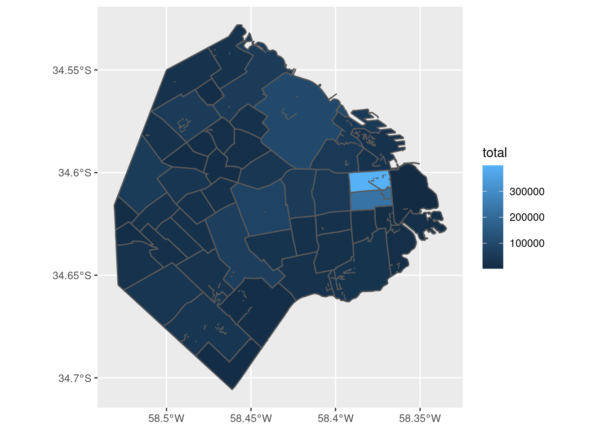

En algunos casos, un archivo con información geográfica contiene todos los datos que necesitamos. Pero lo habitual es que el archivo sólo brinde la ubicación y fronteras de nuestras unidades de análisis, de manera que necesitamos agregarle los datos que hemos obtenido de otras fuentes y queremos proyectar en un mapa.
En el capítulo 2 aprendimos a usar la función left_join() para combinar tablas. Dado que los datos espaciales cargados vía sf() son dataframes -tablas-, podemos usarla para agregar variables a nuestros radios censales. Por ejemplo, las del dataset de interacciones de la ciudadanía con la ciudad.
Lo cargamos,
y recordamos que sus variables son:
## [1] "PERIODO" "RUBRO" "TIPO_PRESTACION" "BARRIO" "total" "COMUNA"
## [7] "AÑO" "MES"Un momento. Las variables que identifican el lugar de un reclamo son las de barrio y comuna, pero la unidad de análisis de nuestro archivo espacial es el radio censal. ¿Cómo podemos cruzar los datos? Por suerte para nosotros, el dataset con los radios censales incluye columnas con barrio y comuna, así que las podemos usar para el cruce. Si no dispusiéramos de esa información, hubiéramos tenido que tomar el camino largo. Este consiste en conseguir un archivo espacial que contenga los límites de los barrios (o comunas) y hacer una operación llamada spatial join para cruzar los datos en base a sus coordenadas geográficas. La “unión espacial” permite poner condiciones como “unir los datos X con los datos Y en caso de que X esté adentro de Y”. Nosotros no vamos a necesitar recurrir a un spatial join, pero es bueno saber que la opción existe (la función es st_join()) en caso de que la necesitemos en el futuro.
Para poder cruzar las tablas de atención ciudadana y la de datos espaciales, necesitamos que la unidad de observación (la entidad que representa cada fila) sea la misma. Cómo el dataset de atención es el menos detallado a nivel espacial, corresponde hacer un agregado de los radios censales para calcular sus datos a nivel barrio o comuna. Vamos con los barrios, usando a nuestros viejos amigos group_by y summary.
Recordemos los nombres de columna de radios:
## [1] "RADIO_ID" "BARRIO" "COMUNA" "POBLACION" "VIVIENDAS" "HOGARES" "HOGARES_NBI"
## [8] "AREA_KM2" "geometry"Todas las unidades numéricas representan valores absolutos (no proporciones) así que es fácil pasarlas a un agregado por barrio; basta con sumarlas.
barrios_geo <- radios %>%
group_by(BARRIO) %>%
summarise(POBLACION = sum(POBLACION),
VIVIENDAS = sum(VIVIENDAS),
HOGARES = sum(HOGARES),
HOGARES_NBI = sum(HOGARES_NBI),
AREA_KM2 = sum(AREA_KM2))Y esto es lo lindo de trabajar con datos geográficos en forma de tabla: la columna geometry, la que guarda la información espacial, se crea en forma automática al hacer el summarise, y contiene la fronteras de la unidad de agregación - los barrios.
Como efecto secundario de la operación (que en la jerga del GIS se conoce como “disolver polígonos”) podemos ver algunas líneas internas que han quedado como residuo de la unión de los radios censales. Es un problema muy común al trabajar con datos geográficos, dependiendo de la calidad de la fuente. Por suerte, en este caso el pequeño desperfecto no afecta nuestros planes. En pos de la prolijidad, podríamos realizar un ajuste fino y eliminar esas líneas internas, ya que hay varias técnicas para ello. Pero la complejidad de la tarea haría demasiado larga la explicación, así que vamos a dejarlo así… un recordatorio de que al trabajar con datos “reales” pasan estas cosas.
Ahora hagamos también un agregado por barrio de los datos de atención al ciudadano,
atencion_por_barrio <- atencion_ciudadano %>%
group_by(BARRIO) %>%
summarise(total = sum(total))
head(atencion_por_barrio)## # A tibble: 6 × 2
## BARRIO total
## <chr> <int>
## 1 " " 5722
## 2 "AGRONOMIA" 9604
## 3 "ALMAGRO" 54190
## 4 "BALVANERA" 49540
## 5 "BARRACAS" 31752
## 6 "BELGRANO" 56522Ya tenemos las piezas necesarias: dos datasets con una columna en común que los relaciona (“BARRIO”) permitiendo cruzar los datos. Queremos conservar todas las observaciones del dataset geográfico, agregando los datos contenidos en el dataset de atención en donde la variable BARRIO sea la misma.
## Joining, by = "BARRIO"¡Ahora podemos hacer un mapa de cantidad de contactos por barrio!

Tal como habíamos verificado cuando hicimos la exploración del dataset en el capítulo 2, en los barrios céntricos se registra la mayoría de los contactos. Podemos mejorar un poco el mapa, normalizando los datos para mostrar valores per cápita.
ggplot() +
geom_sf(data = barrios_geo, aes(fill = total/POBLACION)) +
labs(title = "Contactos a atención ciudadana per cápita",
subtitle = "Barrios de Ciudad Autónoma de Buenos Aires",
fill = "contactos/habitante")Normalizar los datos hace evidente que los barrios son parejos en su grado de demanda por habitante, exceptuando los casos salientes que mencionamos antes.
Hasta ahora hemos mostrado sobre un mapa variables numéricas, pero es igual de fácil representar variables categóricas. Imaginemos que quisiéramos mostrar el principal rubro por el cual se comunican los ciudadanos en cada barrio.
Usando los verbos de transformación que conocemos, la receta sería:
atencion_por_barrio_principal_rubro <- atencion_ciudadano %>%
group_by(BARRIO, RUBRO) %>%
summarise(contactos = sum(total)) %>%
filter(contactos == max(contactos))## `summarise()` has grouped output by 'BARRIO'. You can override using the `.groups` argument.## # A tibble: 6 × 3
## # Groups: BARRIO [6]
## BARRIO RUBRO contactos
## <chr> <chr> <int>
## 1 " " REGISTRO CIVIL 5004
## 2 "AGRONOMIA" SANEAMIENTO URBANO 4691
## 3 "ALMAGRO" SANEAMIENTO URBANO 22429
## 4 "BALVANERA" SANEAMIENTO URBANO 16840
## 5 "BARRACAS" SANEAMIENTO URBANO 10138
## 6 "BELGRANO" SANEAMIENTO URBANO 21060Como funciona esta cadena de verbos?
group_by() agrupa los datos por barrio, y para cada barrio agrupa los datos por rubro.
summarise() “pela” una capa de agrupamiento, la más externa que es rubro, y deja para cada barrio una sola fila por rubro, con la suma de sus totales.
El paso final en la cadena de transformación, filter(contactos == max(contactos)) funciona porque todos los verbos de transformación respetan el agrupamiento. Es decir, si los datos fueron agrupados en forma previa, la función filter() aísla la fila con la cantidad máxima de contactos en cada uno de los grupos. En este caso, el agrupamiento que le llega a filter() es sólo por “BARRIOS”, porque la función summarise() borró la capa “RUBRO”. Resultado final: por cada barrio, una única fila que contiene el rubro que sumó más contactos
Agregamos la información al dataset geográfico vía left_join()
## Joining, by = "BARRIO"Y mostramos el rubro principal por barrio en un mapa